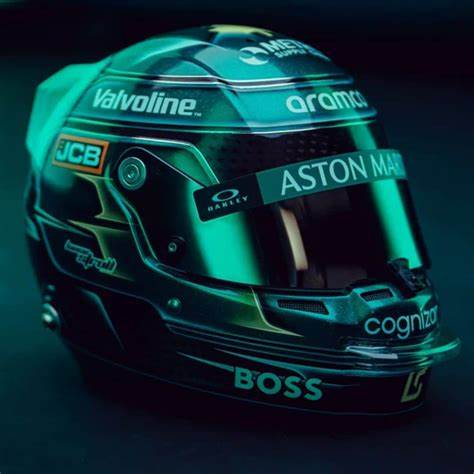

Lance Stroll
- Team: Aston Stroll
- Land: Kanada
- Geburtsort: Montreal, Kanada
- Geburtsdatum: 29.10.1998
- Alter: 26
- Podien: 3
- Grands Prix gefahren: 164
- Weltmeisterschaften: 0
- Team: Aston Martin
- Fahrernummer: 18
Es gibt kein zu viel zu früh für Stroll, eine Teenager-Sensation mit einer Vorliebe für nasses Wetter. Als eines der coolen Kids in der Startaufstellung wurde Stroll kurz nach seinem 18. Geburtstag von Williams vorgestellt – noch bevor er die High School abschloss und seinen Führerschein machte. In seiner Debütsaison 2017 meinte Stroll es ernst und stellte dabei Rekorde auf. Als opportunistischer Rennfahrer fuhr er in Baku als jüngster Rookie auf das Podium. Als Sohn eines wohlhabenden Unternehmers ist Stroll an einen Champagner-Lebensstil gewöhnt, aber jetzt weiß er, dass der Sprudel auf dem Podium umso süßer schmeckt. In Monza meisterte er dann die Regengüsse und wurde zum jüngsten Fahrer der Geschichte, der in der ersten Reihe stand. Der Kanadier ist ein zielstrebiger Starter, der es liebt, in der ersten Runde Plätze gutzumachen und sich in die Punkteränge zu kämpfen. Stroll hat das Potenzial, eine langfristige Größe in der Formel 1 zu sein - wie eine erste Pole und zwei weitere Podestplätze im Jahr 2020 zeigen. Diese kamen, nachdem sein Vater Lawrence das Konsortium geleitet hatte, das Force India Mitte der Saison 2018 übernahm und es dann für 2021 von Racing Point in Aston Martin umwandelte. Die Zukunft sieht sowohl für das Team als auch für den jungen Fahrer rosig aus - und selbst wenn es regnet, kann Stroll weiter an der Spitze des Feldes fahren.